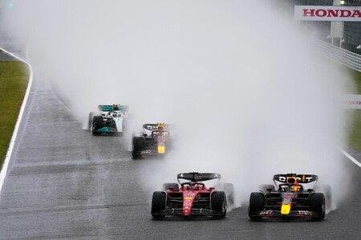

¿De qué se trata la Fórmula 1?
Si te interesa sumergirte en este increible mundo de la Formula 1, o si una persona que conoces se la pasa hablando de este deporte y tenes que fingir entenderlo, a continuación te dejamos una breve introducción.
¿Cómo se disputa una temporada de Formula 1?
Una temporada de Fórmula 1 consta de una serie de carreras llamadas Grandes Premios (GP), que se llevan a cabo en diferentes circuitos alrededor del mundo. En dicho campeonato compiten, actualmente, 10 equipos, con dos pilotos cada uno. A lo largo de la temporada, los equipos pueden introducir actualizaciones en sus autos para mejorar el rendimiento. La competencia es dinámica, y las estrategias de carrera y las tácticas juegan un papel crucial en el resultado final. Al final de la temporada, el equipo y el piloto con el rendimiento más consistente y exitoso a lo largo de las carreras son reconocidos como los campeones del mundo de Fórmula 1 en sus respectivas categorías.
¿En qué consiste un fin de semana de carrera?
La competición se celebra durante el fin de semana y dura 3 días cada Gran Premio. Anteriormente cada uno contaba con tres sesiones de práctica, una de clasificación y la carrera. Pero a partir del 2021, que se implementaron carreras Sprint en algunos Gran Premio, durante el fin de semana que se cuenta con dicha carrera adicional el formato original cambia. A continuación te explicamos en que consiste un fin de semana de carrera sin Sprint y con Sprint.
Sin Sprint
Los entrenamientos libres
Los equipos y pilotos usan los entrenamientos libres para adaptar el setup del coche (su configuración) con programas para mejorar el rendimiento en la clasificación y la carrera, y que los pilotos rueden y prueben configuraciones, y que mejoren sus tiempos en pista. Cada una de las sesiones dura una hora (desde 2021). Anteriormente los libres 1 y 2 duraban 90 minutos, pero se acortaron las sesiones para no hacerlas demasiado largas. Los libres 1 y 2 se celebran el viernes, y los libres 3, el sábado. Dos horas y media después del término de los libres 3 comienza la clasificación.
La clasificación
Tradicionalmente, la clasificación para la parrilla de salida se hacía en una única sesión de 1 hora de duración, en la que los coches tenían un número de vueltas máximo estipulado para conseguir el mejor tiempo. Durante esta sesión, todos los pilotos competían en simultáneo. A partir de 2003 y hasta 2005, se cambió el sistema de clasificación, introduciéndose una sesión en la que los pilotos solo podían rodar una vuelta de instalación y un único tiempo final, con el que eran ordenados en el clasificador. Los pilotos, que solo disponían de una única vuelta cronometrada para marcar un tiempo, salían a clasificar en grupos de 5 pilotos, esperando a que el competidor marcase su vuelta para salir a rodar. Después de que los 5 pilotos tuvieran su tiempo, había un descanso de unos minutos y seguían los siguientes 5 pilotos. El orden para salir a pista era el mismo en el que habían finalizado la carrera anterior, por lo que el ganador del último Gran Premio era el último en clasificar. Desde 2006 se instauró el sistema de tres sesiones, denominadas Q1, Q2 y Q3, que se mantienen hasta la actualidad, aunque con algunas variantes. Este sistema clasificatorio consta de tres partes (en inglés Qualifying 1, Qualifying 2 y Qualifying 3), que a partir de 2008 duraban 20, 15 y 10 minutos, y a partir de 2014 pasaron a durar 18, 15 y 12 minutos respectivamente. Los 15 pilotos más rápidos en la Q1 pasan a la Q2, de la cual los diez más veloces pasan a la Q3 en que se decide la pole position —el primer lugar de la parrilla— y se reparten las demás posiciones. El orden de la parrilla desde el puesto once hacia atrás se determinaba por orden inverso de eliminación. A partir de 2010 esto ya no es así, se determina el orden de la parrilla desde el más lento al más rápido, sin alteración alguna de la parrilla. Hasta la temporada 2010, durante la Q1 y la Q2 no había restricción en el uso de gasolina ni de repostaje; sin embargo, desde el inicio de la Q3 hasta el inicio de la carrera al día siguiente, no estaba permitido repostar ni retirar combustible del depósito. Asimismo, los equipos cuyos monoplazas no hubiesen clasificado para participar en la Q3 debían informar a la FIA, por escrito y antes de iniciar la Q3, la cantidad de combustible para repostar al día siguiente antes de la carrera, lo cual les daba una ventaja con respecto a los pilotos que hubiesen pasado a la Q3. Para 2016 los equipos aprobaron la introducción de un sistema de clasificación "eliminatorio", en el que los pilotos eran eliminados durante la Q1, Q2 y Q3 según quien tuviese el peor tiempo, hasta alcanzar el número de pilotos que clasificaría a la siguiente etapa. La Q1 durará 16 minutos, la Q2 15 minutos y la Q3 14 minutos, y a partir de un determinado momento se eliminarán los pilotos con el peor registro cada 1 minuto y medio, hasta definir quienes continuarán clasificando. La Q1 eliminará pilotos desde los 7 minutos, y de los 20 competidores iniciales pasarán 15. La Q2 eliminará pilotos desde los 6 minutos, y de los 15 pilotos pasarán 8 a la definición. Finalmente, en la Q3 competirán los restantes, siendo eliminados a partir de los 5 minutos hasta que solo quede uno, quien partirá desde la pole position. Tras fracasar en su objetivo de aumentar la emoción, se regresó al sistema de clasificación anterior en el tercer gran premio de la misma temporada.
La carrera
Antes de comenzar la carrera, los pilotos dan la denominada "vuelta de formación", donde demuestran que el coche puede arrancar por sí mismo y aprovechan para calentar motores, frenos y neumáticos. Después de realizar esta vuelta, los vehículos se colocan en la parrilla de salida, en la posición determinada durante la clasificación. Cuando ocurre esto, el jefe de carrera activa el procedimiento de inicio de carrera que consiste en el encendido de 5 luces rojas, en intervalos de un segundo. Cuando todas las luces están encendidas, se apagan y la carrera se da por iniciada, a partir de este momento los pilotos pueden empezar a mover sus coches. Si durante este corto proceso algún piloto tiene algún problema técnico debe levantar y mover las manos, así el proceso de salida será abortado, e inmediatamente los corredores realizarán una segunda vuelta de calentamiento, reduciendo la distancia de carrera del Gran Premio en una vuelta menos. Este proceso podría repetirse en sucesivas veces. La distancia de todas las carreras será igual a la menor cantidad de vueltas completas que exceda una distancia de 305 km (excepcionalmente, en Mónaco es de solo de 260 km por cuestiones de tiempo y velocidad media), y no podrá durar más de dos horas. Si no existen inconvenientes, la duración de una carrera está entre 90 y 100 minutos. En caso de suspensión y reanudación, su duración se extiende a cuatro horas. En caso de no poder recomenzar, se reparten los puntos de acuerdo al porcentaje de vueltas completadas. Los pilotos que crucen la línea de meta tras la última vuelta en las 10 primeras posiciones serán recompensados con una entrega de puntos. Estos puntos determinarán la posición final del Campeonato Mundial de Pilotos de Fórmula 1, así como el Campeonato Mundial de Constructores de Fórmula 1.
Con Sprint
¿Qué es una carrera Sprint?
Una carrera al sprint es básicamente una versión recortada de una carrera normal, que se lleva a cabo en una distancia menor, el día antes de la carrera principal, a la que no sustituye. Ya se utilizaban en muchas otras categorías, aunque quizá lo más apropiado para la Fórmula 1 es compararlo con la Fórmula 2. En la F2, la carrera al sprint es de 120 km y la carrera principal cubre 170 km, y no están nada faltas de emoción. En Fórmula 1 las carreras sprint son de 100 kilómetros, y su número de vueltas depende de la longitud de cada circuito en el que se disputen
¿Qué cambia en el Gran Premio con la carrera Sprint?
Este año (a diferencia de los dos años anteriores) la carrera sprint y la carrera principal son independientes, de manera que cada una tiene su propia clasificación. Además, se ha reducido de dos a una sesión de entrenamientos libres y se han hecho ajustes en el reparto de los neumáticos, siendo el más importante que ahora la SQ1 y SQ2 (primeras dos rondas de la clasificación corta) tienen que ser con neumáticos medios y la SQ3 con blandos (es indiferente si son nuevos o usados tras el último cambio en el reglamento). Eso hace que en las tres rondas de la clasificación corta los pilotos solo puedan hacer una tanda, sin cambiar neumáticos. Esa clasificación corta sustituye a la FP2, por lo que en 2023 los equipos y pilotos solo tienen una sesión de entrenamientos libres (P1, de 60 minutos) el viernes por la tarde para prepararse de cara al resto del fin de semana, lo que se espera que aumente la emoción. Además, ahora los pilotos pueden usar el DRS después de la primera vuelta, y no después de dos vueltas como ocurre en las carreras normales y como ocurría en las sprint en 2021 y 2022.
¿Cómo es el sistema de puntos?
| Pos. | 1950-59 | 1960 | 61-90 | 91-2002 | 03-09 | 2010-18 | 2019-act |
|---|---|---|---|---|---|---|---|
| 1° | 8 ptos | 8 ptos | 9 ptos | 10 ptos | 10 ptos | 25 ptos | 25 ptos |
| 2° | 6 ptos | 6 ptos | 6 ptos | 6 ptos | 8 ptos | 18 ptos | 18 ptos |
| 3° | 4 ptos | 4 ptos | 4 ptos | 4 ptos | 6 ptos | 15 ptos | 15 ptos |
| 4° | 3 ptos | 3 ptos | 3 ptos | 3 ptos | 5 ptos | 12 ptos | 12 ptos |
| 5° | 2 ptos | 2 ptos | 2 ptos | 2 ptos | 4 ptos | 10 ptos | 10 ptos |
| 6° | - | 1 pto | 1 pto | 1 pto | 3 ptos | 8 ptos | 8 ptos |
| 7° | - | - | - | - | 2 ptos | 6 ptos | 6 ptos |
| 8° | - | - | - | - | 1 pto | 4 ptos | 4 ptos |
| 9° | - | - | - | - | - | 2 ptos | 2 ptos |
| 10° | - | - | - | - | - | 1 pto | 1 pto |
| VR | 1 pto | - | - | - | - | - | 1 pto |
A lo largo de los años, el orden de puntuación para los pilotos y los constructores ha ido variando, pero siempre se ha premiado más a los primeros que a los últimos, excepto entre 1950 y 1959, que también puntuaba el piloto que registrase la vuelta rápida de la carrera. La puntuación actual en un Gran Premio se distribuye de la siguiente manera: el ganador de la prueba conseguirá 25 puntos; el segundo clasificado, 18; el tercero, 15; el cuarto, 12; el quinto, 10; el sexto, 8; el séptimo, 6; el octavo, 4; el noveno, 2; y el décimo, 1 punto. Durante décadas, la puntuación ha determinado el orden en la clasificación del campeonato del mundo de pilotos y de constructores, pues quien tuviera más puntos sería el campeón, y en caso de empate decidirían las mejores posiciones en carrera. En el caso de los constructores, la suma de los puntos de sus pilotos determina los puntos totales del equipo y la posición del mismo en el campeonato. En 2014 la última carrera del campeonato recibió puntos dobles. Inicialmente Ecclestone propuso que esta idea se aplicara a las últimas tres fechas para dar emoción al campeonato, pero se aplicó solo al Gran Premio de Abu Dabi. Esta medida recibió duras críticas y no produjo los resultados deseados en los campeonatos de pilotos o de constructores, por lo cual fue dejada de lado y no se aplicó en la temporada 2015. Desde 2015, y por decisión de la mayoría de pilotos en una reunión preestablecida, la puntuación doble en la última carrera del campeonato se descarta y se mantiene la puntuación establecida desde 2010 hasta 2013. Desde 2019, y al igual que desde 1950 hasta 1959, se otorgara un punto al piloto de entre los diez primeros clasificados que consiga la vuelta rápida, perdiendo el efecto cuando el piloto que consigue la vuelta rápida está ubicado en undécimo lugar o inferior. Si los dos automóviles de un equipo acaban en los puntos, ambos computan en el Campeonato de Constructores. El número total de puntos ganados en cada carrera se suman, y el conductor y el constructor con más puntos al final de la temporada son campeones del mundo en su categoría correspondiente. Si un piloto cambia de equipo durante la temporada, mantiene todos los puntos para su campeonato que haya conquistado con el equipo anterior. Para recibir puntos un piloto debe clasificar, es decir, completar al menos el 90% de la distancia total recorrida por el ganador. Sin embargo, en ciertas condiciones es posible recibir puntos incluso si se retira antes de concluir la carrera. En caso de que el ganador complete menos del 75% de las vueltas de carrera, solo se otorga la mitad de los puntos a pilotos y constructores. Esto ha ocurrido solo cinco veces en la historia de la Fórmula 1, la última vez fue en el Gran Premio de Bélgica 2021. Esta circunstancia decidió al ganador del campeonato en una ocasión.
¿Qué reglas básicas hay durante el fin de semana de carrera?
Cantidad y tipos de neumaticos
Blando
Medio
Duro
Intermedio de lluvia
Lluvia extrema
Neumáticos lisos
Hay cinco compuestos de asfalto seco. Cada uno tiene un código que va de C1 a C5. El C1 es el más duro y se degrada menos rápidamente, pero ralentiza el rendimiento del coche, ya que tarda más en calentarse. El C5, el más blando, se calienta con especial rapidez y proporciona un agarre perfecto en la pista, permitiendo que el coche vaya más rápido. De estos cinco compuestos, Pirelli elige solo tres para cada fin de semana de Gran Premio. Esta elección se basa en una serie de factores (como la forma de la pista, la temperatura de la pista, la carga aerodinámica necesaria, etc.).
Neumáticos de lluvia
Hay dos tipos de neumáticos de lluvia, ambos con ranuras para evacuar el agua de la pista: los intermedios, que se utilizan en condiciones meteorológicas cambiantes o cuando la pista se está secando, y los "full wet", que se utilizan cuando el tiempo es especialmente malo. Estos últimos están diseñados para evacuar la mayor cantidad de agua posible para evitar el aquaplaning.
¿Cuántos neumáticos se suministran en cada Gran Premio?
En los Grandes Premios, Pirelli suministra 13 juegos de neumáticos para cada piloto (2 blancos, 3 amarillos y 8 rojos). El fabricante también suministra 4 juegos de intermedios y 3 “full wet”. Durante los fines de semana de clasificación sprint, Pirelli solo suministra 12 juegos de neumáticos lisos (2 blancos, 4 amarillos y 6 rojos).
¿Cuántos neumáticos se utilizan por carrera?
Depende. El reglamento de la FIA exige que los pilotos utilicen al menos dos compuestos slick diferentes en una carrera en seco. Pero no es necesario cambiar los neumáticos durante un fin de semana de clasificación sprint, ni durante una carrera en mojado. El año pasado, por ejemplo, Esteban Ocon cruzó la línea de meta del Gran Premio de Turquía sin cambiar los neumáticos ni una sola vez.
En los pitstop
Un pit stop es ese momento en el que durante una carrera, un vehículo debe detenerse por un momento para reposar, cambiar los neumáticos, hacer reparaciones o ajustes al auto o incluso para cambiar de conductor. Esto se lleva a cabo en una pista llamada pit lane, en la cual una pista asfaltada conduce a los vehículos hasta las estaciones de pit. Ahí se encuentran de cinco a veinte mecánicos, dependiendo del tipo de carrera, que se encargan de todos estos procesos a una velocidad impresionante, mientras el conductor permanece dentro del auto, esperando la señal de un semáforo que se pone en verde para saber que será su turno de avanzar y continuar con la carrera. Algunas acciones de la parada en boxes ya no pueden realizarse más rápido que 0.15 segundos, mientras que el tiempo mínimo entre la liberación de las pistolas de las ruedas y el cambio a verde del semáforo es ahora de 0.2 segundos.
Banderas
Las banderas en la Fórmula 1, y por extensión en el automovilismo, son imprescindibles pues es la manera en que los comisarios de pista se comunican con los pilotos. Es como saberse las señales de tráfico: los conductores deben de conocer y respetar las distintas banderas. Las dimensiones mínimas son 60 cm × 80 cm, excepto la roja y la de cuadros que tienen que ser cómo mínimo de 80 × 100 cm.
Bandera a Cuadros
Final de carrera, o en su caso, de cada una de las sesiones de la competición.
Bandera Amarilla
Peligro, no se permite el adelantamiento y se debe reducir la velocidad.
Bandera a Rayas
Existencia en la pista de un elemento que causa disminución de la adherencia.
Bandera Roja
Detención de los entrenamientos o de la carrera ya sea por un accidente o por causas meteorológicas.
Bandera Azul
En la carrera: el piloto va a ser superado por otro piloto que ha realizado al menos una vuelta más, y debe permitir el adelantamiento tan pronto como sea posible.
Bandera Blanca
Existe un vehículo mucho más lento en la pista, ya sea de emergencias o de carreras.
Bandera Blanca y Negra
Apercibimiento por maniobra peligrosa: El piloto ha realizado una maniobra antideportiva y recibe esta sanción.
Bandera Negra
Exclusión total de la prueba: El piloto efectuó una maniobra antideportiva de suma gravedad, por lo que es sancionado con la exclusión total de la competición.
Bandera Negra con Circulo
Indica al piloto que su vehículo tiene problemas mecánicos que pueden constituir un peligro para los demás competidores y para él, por lo que deberá detenerse en su box lo antes posible.
Bandera Verde
El peligro ha pasado y se puede volver a adelantar.
Datos Curiosos
¿Por qué se le llama "Gran Circo" a la Fórmula 1?
Esto es debido a que en cada Gran Premio viaja la misma familia de pilotos, ingenieros, jefes, organizadores, suministradores, logística, etc. Siempre son las mismas caras que dan la vuelta al mundo viajando a cada circuito. Como un circo cuando realiza una gira. El Gran Circo también se asocia al circo romano, añadiendo el factor de los espectadores y las gradas. Este término comenzó a usarse en la década de los 50 y aún se mantiene en la actualidad.
¿Qué es y para qué sirve el halo?
El halo es un elemento de seguridad que incorporó la F1 como consecuencia del accidente que sufrió Jules Bianchi en el GP de Japón de 2014. Se trata de un componente que rodea el habitáculo del piloto y que le protege de piezas voladoras, neumáticos y diversos elementos externos de la pista. Soporta hasta un peso de 12 toneladas y comenzó a utilizarse de manera oficial en la temporada 2018. Su resultado antiestético pronto se olvidó gracias a su eficacia en accidentes posteriores.
¿Cuál fue la carrera más bochornosa de la historia?
El Gran Premio de Estados Unidos de 2005 pasó a la historia por ser, probablemente, la máxima vergüenza de la F1 que se recuerda hasta la fecha. En aquel año, había una guerra de neumáticos: Michelin contra Bridgestone. Llegados a Indianápolis, los equipos que utilizaban el compuesto Michelin no soportaban las cargas del óvalo, por lo que sus pilotos se exponían a accidentes de importante gravedad a altas velocidades. Antes de la carrera, Michelin presionó para incluir una chicane y así reducir la velocidad y minimizar el riesgo en el óvalo. Finalmente, no sucedió y en la vuelta de formación del día siguiente todos los equipos con zapatos Michelin se metieron en boxes y se negaron a participar. Tan solo 6 coches (todos de Bridgestone) corrieron en aquel GP: los Ferrari, los Jordan y los Minardi. El público que pagó una entrada para ver la F1 empezó a abuchear y a tirar objetos a la pista. Esta fue la única victoria de Michael Schumacher en 2005 y el último podio de Jordan en la categoría. Pero todos se quedaron con el recuerdo de una carrera deleznable. La F1 tardó años en recuperar la confianza de la audiencia estadounidense.
Las coincidencias entre Fernando Alonso y Max Verstappen
Fernando Alonso y Max Verstappen comparten una peculiaridad. Ambos pilotos fueron capaces de destronar a dos heptacampeones diferentes. El español cortó la racha de Michael Schumacher en la temporada 2005, mientras que el neerlandés frenó a Lewis Hamilton en 2021. Curiosamente, el piloto de Red Bull reconoció en más de una ocasión utilizar el Renault azul y amarillo de Fernando en los videojuegos antiguos puesto que era el piloto con el que más se reconocía en términos de estilo de pilotaje. Hoy, los dos son campeones. Su abrazo al acabar el Gran Premio de Abu Dhabi ya es histórico.
¿Por qué se eliminaron los repostajes en las carreras?
La última vez que vimos un repostaje fue en el GP de Brasil de 2009. Desde entonces, la F1 ha evitado su regreso a toda costa por varios motivos: la búsqueda de eliminación del peligro (incendios y accidentes con la manguera), la reducción de costes, y aligerar el peso de los monoplazas. Esto es contradictorio, puesto que en la última década los coches han ido engordando más y más. Además, la F1 está siguiendo el camino de la electrificación. Por lo que ya no se verán momentos aterradores como el incendio de Jos Verstappen en Alemania 1994 o el de Eddie Irvine en Bélgica 1995, ni tampoco la excursión de Felipe Massa con la manguera en el pitlane durante el GP de Singapur en 2008.
¿Cuál es el circuito en el que se corrieron más carreras?
No, no es ni Silverstone, ni Spa ni Mónaco. Nos referimos al Autodromo Nazionale di Monza. El famoso templo de la velocidad ha acogido 71 Grandes Premios de Fórmula 1 de manera ininterrumpida desde 1950, fecha en la que se fundó la competición. Tan solo tuvo un parón, en 1980, debido a una remodelación. En aquella edición la cita italiana se trasladó a Imola. Monza es, sin duda, el punto de encuentro favorito para los tifosi, que siempre traen consigo su pasión ferrarista. El circuito italiano ha visto grandes victorias, aunque las más recordadas siempre serán las que se tiñeron de rojo Ferrari: Ascari, Hill, Surtees, Scarfiotti, Regazzoni, Scheckter, Berger, Schumacher, Barrichello, Alonso y Leclerc.
En algunos circuitos los pilotos se someten a temperaturas mayores a los 50°C
A causa de la humedad ambiental, el clima tropical y lo que ya soportan de por sí dentro del monoplaza, en ocasiones los pilotos corren aguantando temperaturas que superan la barrera de los 50 grados centígrados.
Los pilotos pierden entre 3 y 5 kilos por carrera
Los F1 del presente son exageradamente exigentes a nivel físico. Las fuerzas G a las que están sometidos los pilotos constantemente, más las altas temperaturas en el habitáculo, provoca una pérdida de hasta 1.500 calorías en las pruebas más desafiantes. Esto en tan solo 90 minutos de carrera. Así que si alguien te dice que la Fórmula 1 no es un deporte, proponle subirse a un kart durante 10 minutos y notará las agujetas y los moratones al día siguiente.
Un volante puede tener hasta 20 botones
Hamilton, Verstappen y compañía suelen tener justo delante de ellos 20 botones diferentes para aprovechar las funcionalidades de sus coches. Entre las que se encuentran la redirección hacia el pit lane a hacer una parada, el limitador de velocidad para entrar correctamente, ajustar el equilibrio de los frenos, activar el DRS para adelantar en las zonas indicadas, activación de la radio, control del estado de carga de la batería, etcétera.
¿Cómo orinan los pilotos durante un GP?
Si un piloto está en plena carrera y tiene ganas de orinar, lo hace. ¿Cómo? Muy sencillo. Por muy asqueroso que suene, orinan en sus trajes. Y es que un piloto de F1 se está hidratando constantemente a través de un conducto conectado a la boca. Si pulsa un botón del volante, bebe. Generalmente, suele ser bebida isotónica y pueden ingerir hasta un litro y medio para compensar la pérdida de líquidos durante un Gran Premio. Así que sí, los pilotos se orinan encima si es necesario. Y no, no detienen la carrera por ello.
La maldición del número 13
La Fórmula 1 tiene prohibido el dorsal 13. Tampoco existe un garaje con el número 13 y, anteriormente, cuando los dorsales se asignaban según la posición de los constructores en la clasificación, los equipos evitaban ese número. ¿Por qué? Porque históricamente, quien ha usado el 13 en la F1, ha terminado mal. Este número registra dos muertes seguidas en 1925 (Paul Torchy) y 1926 (Giulio Masetti). En la historia reciente, cuatro pilotos probaron dicho dorsal y no les fue nada bien: incendios, abandonos, fracasos a la hora de clasificar para las carreras... El caso más cercano es el de Pastor Maldonado. El venezolano utilizó el 13 en su Lotus durante las temporadas 2014 y 2015, y se retiró de la F1 con casi más abandonos que puntos en aquellas dos temporadas.
¿Cuál es la velocidad record?
Valtteri Bottas ostenta este récord. El finlandés lo logró en 2016, durante la sesión clasificatoria del GP de Azerbaiyán. El Williams se puso a rebufo del Red Bull de Max Verstappen en la recta de más de dos kilómetros del circuito y alcanzó los 378 km/h. Ahora, con los coches más pesados y con más resistencia aerodinámica, es impensable que se pueda superar esta cifra a corto plazo.
El pitstop más rápido
La parada en boxes en boxes más rápida de la historia de la Fórmula 1 ha sido de McLaren en el Gran Premio de Qatar 2023. El equipo británico estableció el récord de pit stop con el coche de Lando Norris en 1,80 segundos después del segundo stint en la carrera larga sobre el circuito de Losail.
El infierno verde
Nürburgring Nordschleife es uno de los circuitos más peligrosos en los que la F1 haya corrido en toda su historia, la variante que uso la máxima categoría contaba con 160 curvas y una longitud de 22.8 km. En este circuito han perdido la vida decenas de pilotos, a su vez ha sido testigo de algunos de los accidentes más fuertes de la historia del automovilismo. En cuanto a F1 el que más se recuerda es el que Nikki Lauda sufriera en 1976, mismo que lo pusiera al borde de la muerte y que le costara perder el campeonato de tal año.
¿Cuántas personas conforman un equipo de F1?
En el caso de las escuderías más poderosas, como Mercedes, Ferrari, Mclaren o Red Bull, pueden trabajar hasta un total de 600 personas para que los dos monoplazas cosechen éxitos en la pista. Sin embargo, no todos los equipos pueden permitírselo ya que los presupuestos que manejan no son los mismos ni mucho menos.
Miles de cambios de marcha en una carrera
A lo largo de las vueltas que se recorren en el seno de una carrera, se cree que de media los pilotos llevan a cabo entre 2.500 y 4.000 cambios de velocidad. Como no puede ser de otra forma, esa cantidad depende de la morfología que presente el trazado, ya que a mayor alternancia entre curvas lentas y rectas mayor será esta.
Los neumáticos de lluvia evacúan 65 litros por segundo
En esas carreras épicas bajo la lluvia que se han visto de vez en cuando, las llantas de los neumáticos de mojado han sido capaces de evacuar, de promedio, unos 65 litros por segundo, que es como llenar una bañera en tan solo 1.2 segundos.
La distancia entre el coche y el suelo es como el ancho de un Iphone
Durante el tiempo que un piloto está subido al habitáculo y recorre un circuito, el espacio que separa al fondo del asfalto es de unos 50 milímetros, lo que equivale a la anchura que suele tener un iPhone. Tan cerca que no es de extrañar las chispas que suelen generarse de algunos ligeros contactos con la superficie sufridos por los coches.
Frenar a fondo, parecido a chocar contra una pared a 300 km/h
Durante los segundos que un piloto permanece con el pie pisando el freno a fondo para tomar una curva, experimenta una fuerza de desaceleración similar a la que vive en sus propias carnes el conductor de un vehículo que choca contra una pared a 300 kilómetros por hora.